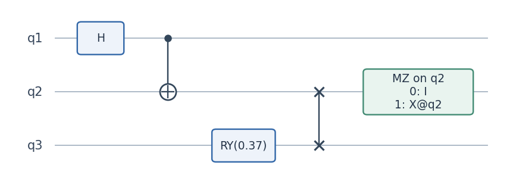
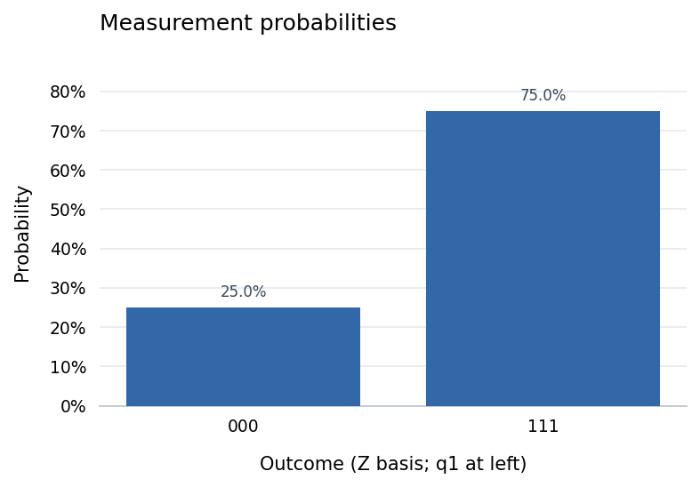
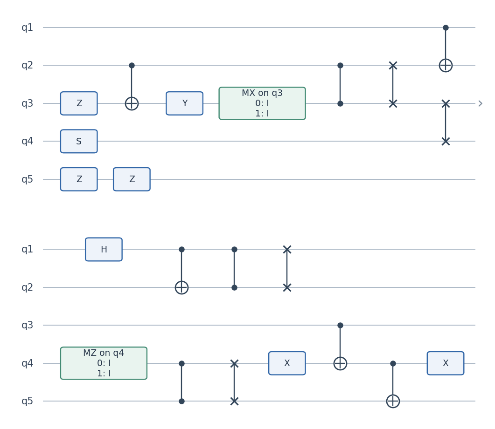
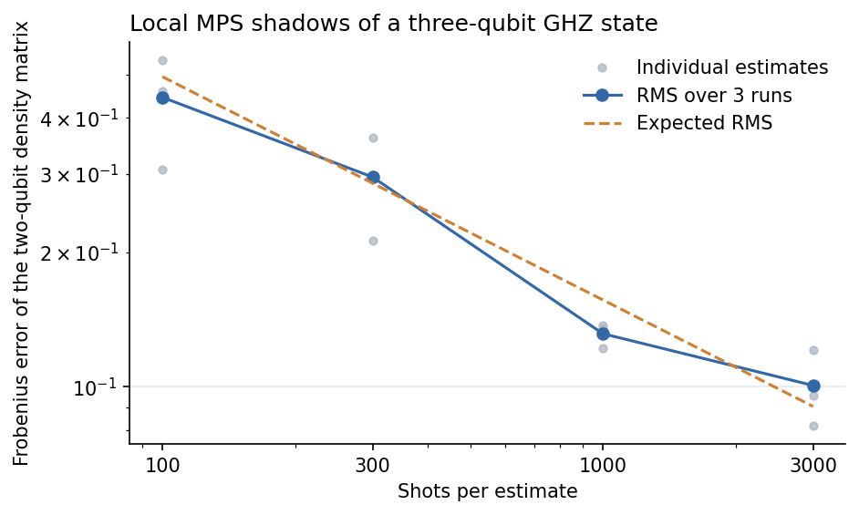
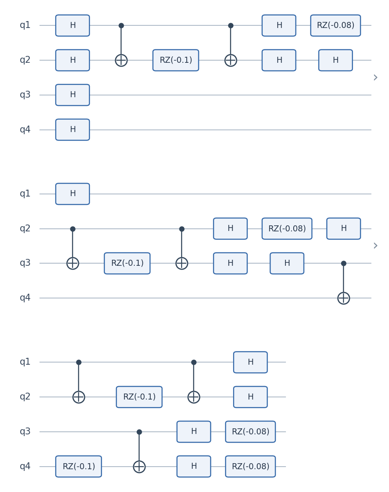
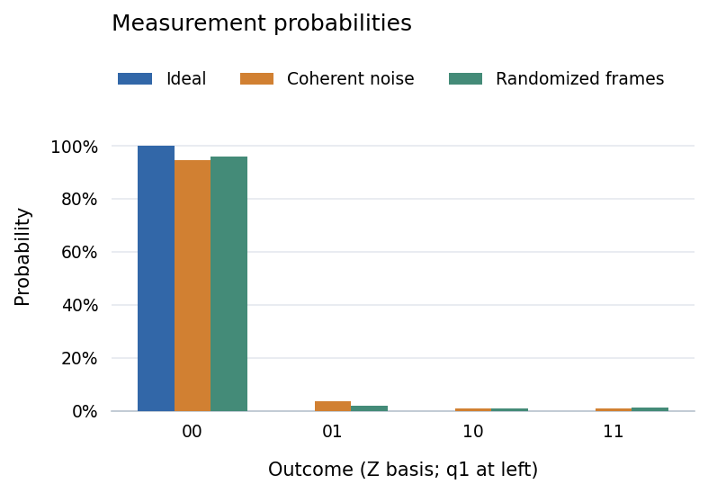
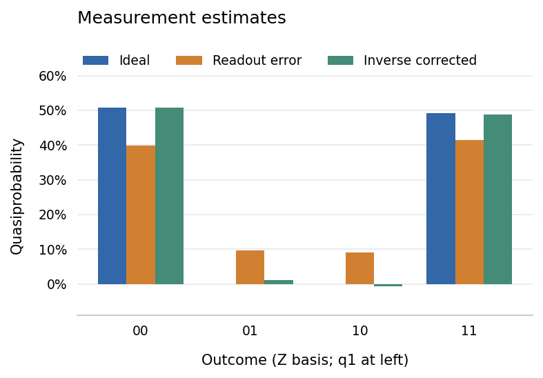
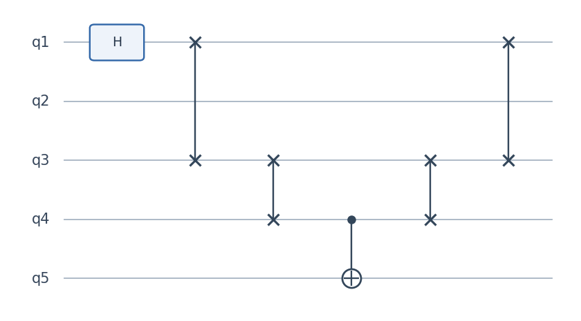
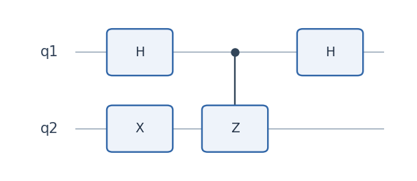
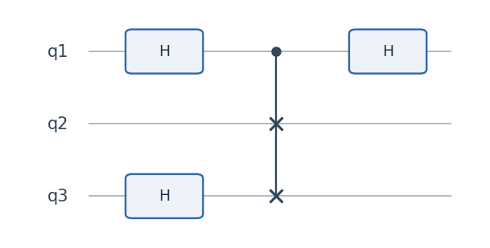

Examples
Circuit and measurement diagrams use plotq(...) as dependency-free text by default. To reproduce the graphical figures, install and load PyPlot, select backend=:pyplot, or run docs/generate_figures.jl from the repository root. The latter also produces the scientific plots. Random samples and circuit realizations vary between runs.
1) GHZ Circuit
A Hadamard followed by two CNOTs prepares (|000⟩ + |111⟩)/sqrt(2). Apply the operations directly to the initial state:
using BlueTangle
ops = [Op("H", 1), Op("CX", 1, 2), Op("CX", 2, 3)]
state = apply(zero_state(get_N(ops)), ops)
@assert correlation(state, "Z,Z", [1, 2]) ≈ 1
@assert correlation(state, "X,X,X", [1, 2, 3]) ≈ 1
get_stats(ops)(N = 3, len = 3, depth = 3, cx_count = 2, swap_count = 0, two_qubit_count = 2, mid_measurement_count = 0)2) Measurement and Correlations
A finite-shot measurement estimates computational-basis probabilities. An exact state or density matrix can evaluate other observables directly. These examples continue from the GHZ circuit above.
measurement = measure(ops, 1000)
rho = apply(to_rho(zero_state(3)), ops)
exact_measurement = measure(rho) # exact basis probabilities, no shots
@assert correlation(measurement, [1, 2]) ≈ 1
@assert correlation(rho, "X,X,X", [1, 2, 3]) ≈ 1
(sampled_Z=measurement.expect, exact_Z=expect(rho, "Z"),
exact_ZZ=correlation(rho, "Z,Z", [1, 2]))(sampled_Z = [-0.016000000000000014, -0.016000000000000014, -0.016000000000000014], exact_Z = [0.0, 0.0, 0.0], exact_ZZ = 0.9999999999999998)measurement.bitstr contains integer basis labels and measurement.sample their estimated probabilities. Qubit 1 is the most significant bit. A single Z measurement distribution cannot determine arbitrary X/Y correlations; change the measurement basis or use the simulated state when it is available.
3) Plot circuits and measurement results
plotq prints a boxed text diagram by default, without a plotting package. Qubit 1 is at the top; controls, targets, and measurements share the wires.
using BlueTangle
feedback_ops = QuantumOps[
Op("H", 1), Op("CX", 1, 2), Op("RY(0.37)", 3),
Op("SWAP", 2, 3), Op("MZ", 2; if1="X")
]
plotq(feedback_ops)q1: ─[H]────●───────────────────────────────────────────
│
q2: ────────⊕──────────────────×────[MZ? 0: I; 1: X@q2]─
│
q3: ────────────[RY(0.37)]─────×────────────────────────plotqt is also available as a direct text renderer. For graphics, install PyPlot once (using Pkg; Pkg.add("PyPlot")), load it, and select it explicitly:
using PyPlot
fig = plotq(feedback_ops; backend=:pyplot)
savefigure(fig, "circuit_feedback.png")
Measurement plots also default to text. The following comparison uses exact probabilities of density matrices, so it isolates gate noise from sampling error.
bell_ops = [Op("H", 1), Op("CX", 1, 2)]
rho0 = zero_state(2) * zero_state(2)'
ideal = measure(apply(rho0, bell_ops); label="Ideal")
noisy = measure(apply(rho0, bell_ops; noise=NoiseModel("depolarizing", 0.08));
label="With gate noise")
plotq([ideal, noisy], ["Ideal", "With gate noise"])Measurement probabilities (Z basis; q1 at left)
Outcome Ideal With gate noise
00 50.0% 44.95%
01 0.0% 5.05%
10 0.0% 5.05%
11 50.0% 44.95%fig = plotq([ideal, noisy], ["Ideal", "With gate noise"]; backend=:pyplot)
savefigure(fig, "measurement_comparison.png")
Bitstring labels put qubit 1 on the left. Use rep=:int for integer labels. Large outcome sets show the largest max_outcomes=32 entries and group the rest as Other. fold wraps circuit diagrams: it measures characters for text and columns for graphics. savefigure(path) saves the current graphical figure.
4) Noise Models and Circuits
Gate noise is specified separately for one-qubit and two-qubit gates:
using BlueTangle, LinearAlgebra
n1 = Noise1("bit_flip", 0.001)
n2 = Noise2("depolarizing", 0.01)
noise = NoiseModel(n1, n2)
ops = [Op("H", 1), Op("CX", 1, 2), Op("CX", 2, 3)]
rho = apply(to_rho(zero_state(3)), ops; noise=noise)
@assert isapprox(real(tr(rho)), 1; atol=1e-12)
@assert eigmin(Hermitian(Matrix(rho))) >= -1e-12
correlation(rho, "Z,Z", [1, 2])0.9605309629629625NoiseModel("bit_flip", 0.001, "depolarizing", 0.01) is equivalent. Noise2(model, p) is the tensor product of the corresponding one-qubit channels: for depolarizing noise with p=0.01, each operand has a 1% nonidentity Pauli error, so the probability of at least one operand error is 1-(1-p)^2.
| Model | Parameter meaning |
|---|---|
amplitude_damping | Excited-state decay probability p |
phase_damping | Off-diagonal entries acquire a factor sqrt(1-p) |
phase_flip, bit_flip, bit_phase_flip | Apply Z, X, or Y with probability p |
depolarizing | Apply X, Y, or Z with total probability p, each equally likely |
rot_X, rot_Y, rot_Z, rot_P | Coherent rotation/phase angle in radians |
Statevectors and MPS sample one Kraus branch; density matrices sum all branches. A channel applied before final readout has a separate readout_noise option.
5) Custom noise models and gates
Built-in matrices are available as gate.X, gate.CNOT, or gate.T. Parameterized matrices use gates("RX(0.3)"), _RX(0.3), or the public functions U1, U2, and U3. A custom local matrix uses Op("my gate", matrix, qubit).
For a custom channel provide Kraus operators satisfying sum(K' * K for K in kraus) ≈ I:
using BlueTangle
p = 0.3
kraus = [sqrt(1-p)*gate.I, sqrt(p)*gate.Z]
@assert is_valid_quantum_channel(kraus)
channel = custom_noise(1, "my phase flip", kraus)
state = plus_state(1)
rho = state * state'
noisy_rho = apply(rho, Op(channel, 1))
@assert noisy_rho ≈ (1-p)*rho + p*gate.Z*rho*gate.ZThe constructor validates dimensions and the trace-preserving condition. Use custom_noise(2, name, kraus) for two-qubit Kraus matrices.
6) Conditional Mid-Measurements
A mid-circuit measurement changes the state before later gates run. Use Op("MZ", q), Op("MX", q), or Op("MY", q) to measure qubit q in a Pauli basis. The recorded bit labels the eigenvalue: 0 means +1, and 1 means −1. Thus X outcomes correspond to |+⟩ and |−⟩, and Y outcomes to (|0⟩ + im|1⟩)/sqrt(2) and (|0⟩ - im|1⟩)/sqrt(2). After collapse the state is expressed in the original computational basis; an X measurement does not leave an extra Hadamard rotation on the state.
For a measured Pauli operator P, the projectors and outcome probabilities are
\[P_b=\frac{I+(-1)^bP}{2},\qquad p_b=\operatorname{tr}(P_b\rho),\qquad \rho_b=\frac{P_b\rho P_b}{p_b}.\]
Here the projector acts on the measured qubit and as the identity elsewhere. A sampled outcome uses the normalized state rho_b; ignoring the outcome gives sum(P_b * rho * P_b for b in (0,1)). Statevectors and MPS represent one sampled trajectory even when its record is not requested. Density matrices can represent either result; see ensemble versus trajectory. Use normalized input states for trajectory simulation.
using BlueTangle
plus_y = ComplexF64[1, im] / sqrt(2)
after, bits = apply(plus_y, Op("MY", 1); track_measurements=true)
@assert bits == [0]
@assert after * after' ≈ plus_y * plus_y'
(record=bits, state=after)(record = [0], state = ComplexF64[0.7071067811865475 + 0.0im, 0.0 + 0.7071067811865475im])Op("MR", q) chooses X, Y, or Z uniformly on each trajectory. Its record contains only the outcome bit, not the chosen basis. If the basis must be saved, choose it explicitly in your own operation list. Untracked density-matrix evolution averages over all three bases and their outcomes.
Apply gates conditioned on the outcome
A conditional measurement applies a branch chosen by its recorded bit. In this example, measure qubit 1 in X: outcome 0 applies Z, and outcome 1 applies H. Both Op("MX", 1; if0="Z", if1="H") and ifOp("MX", 1, "Z", "H") express this.
using BlueTangle
mid_ops = QuantumOps[Op("X", 1), Op("MX", 1; if0="Z", if1="H"),
Op("CX", 1, 2), Op("CX", 2, 3)]
mid_rho = apply(to_rho(zero_state(3)), mid_ops)
mid_measurement = measure(mid_rho; label="Conditional circuit")
@assert real(mid_rho[1,1]) ≈ 0.25
@assert real(mid_rho[8,8]) ≈ 0.75
mid_measurement.sample2-element Vector{Float64}:
0.2499999999999999
0.7499999999999996The first X gate prepares |100⟩. Measuring qubit 1 in X gives |+⟩ or |−⟩ with equal probability. For outcome 0, Z maps |+⟩ to |−⟩, and the CNOTs make (|000⟩-|111⟩)/sqrt(2). For outcome 1, H maps |−⟩ to |1⟩, and the CNOTs make |111⟩, up to an irrelevant global phase. The final unconditioned Z probabilities are therefore 25% 000 and 75% 111.

Track a particular trajectory and its record explicitly:
trajectory, record = apply(zero_state(3), mid_ops; track_measurements=true)
@assert length(record) == 1
@assert only(record) in (0, 1)
record1-element Vector{Int64}:
1Gate-name strings act on the measured qubit. To act elsewhere or run a sequence, pass an Op or a vector of Ops:
ifOp("MZ", 1, Op("I", 2), Op("X", 2))
Op("MZ", 1; if0=Op("I", 2), if1=[Op("X", 2), Op("H", 3)])The first operation measures qubit 1 and flips qubit 2 only for outcome 1. The keyword and ifOp constructors have the same semantics. An omitted keyword branch defaults to an identity on the measured qubit. Each branch currently accepts Op objects, including ordinary measurement operations; OpQC channels (including RESET), nested ifOps, and OpF blocks are not accepted as branch objects.
For unitary branches U_0 and U_1, untracked density evolution computes sum(U_b * P_b * rho * P_b * U_b' for b in (0,1)). Each term retains its Born weight. It applies feedback separately in each branch before summing them.
Measurements inside a branch
With track_measurements=true, the record contains the outer outcome first, followed by outcomes from the branch that actually ran. The other branch adds no bits, so record lengths can depend on the outcome. Inner measurements also condition the returned density matrix:
using BlueTangle
feedback = ifOp("MZ", 1, Op("I", 2),
[Op("H", 2), Op("MZ", 2), Op("MZ", 2)])
initial = product_state([1, 0])
conditional_rho, bits = apply(initial * initial', feedback; track_measurements=true)
@assert length(bits) == 3
@assert bits[1] == 1 && bits[2] == bits[3]
expected = product_state([1, bits[2]])
@assert conditional_rho ≈ expected * expected'
bits3-element Vector{Int64}:
1
1
1The first measurement is certainly 1. The Hadamard makes the next outcome random, while the final Z measurement repeats it. The record is [1, 0, 0] or [1, 1, 1]. For a vector or MPS input the same rule applies. Branch gates receive the supplied gate noise, and MPS branch operations receive the supplied cutoff and maxdim settings.
7) Reset Operation on a Qubit
Op("RESET", q) and Op("RES", q) are aliases for an ideal reset to |0⟩. On a vector or MPS, reset samples a Z measurement and applies X for outcome 1. On a density matrix, it applies both Kraus operators K_0 = |0⟩⟨0| and K_1 = |0⟩⟨1| and sums their contributions. For a target that is the first tensor factor, this gives
\[\mathcal R_1(\rho_{1B}) =\sum_{b=0}^1(K_b\otimes I_B)\rho_{1B}(K_b^\dagger\otimes I_B) =|0\rangle\langle0|\otimes\operatorname{tr}_1(\rho_{1B}).\]
Reset keeps the qubit in the register and removes its correlations with the rest. A partial trace instead removes the subsystem from the returned state. Resetting half of a Bell pair leaves its partner mixed in the ensemble, even though each sampled trajectory is pure:
using BlueTangle, LinearAlgebra
bell = apply(zero_state(2), [Op("H", 1), Op("CX", 1, 2)])
reset_rho = apply(bell*bell', Op("RES", 1))
@assert reset_rho ≈ Diagonal([0.5, 0.5, 0, 0])
trajectory = apply(bell, Op("RES", 1))
@assert expect(trajectory, "Z")[1] ≈ 1
reset_rho4×4 SparseArrays.SparseMatrixCSC{ComplexF64, Int64} with 2 stored entries:
0.5+0.0im ⋅ ⋅ ⋅
⋅ 0.5+0.0im ⋅ ⋅
⋅ ⋅ ⋅ ⋅
⋅ ⋅ ⋅ ⋅ The density matrix is the equal mixture of |00⟩ and |01⟩. One pure-state trajectory selects one of those two states.
Reset with or without a measurement record
Standalone reset discards its internal outcome. Even when tracking is enabled, Op("RESET", q) adds no bit. To retain the pre-reset outcome, explicitly measure Z and apply conditional X:
using BlueTangle
initial = one_state(1)
silent_state, silent_bits = apply(initial, Op("RESET", 1); track_measurements=true)
recorded_reset = ifOp("MZ", 1, "I", "X")
recorded_state, reset_bits = apply(initial, recorded_reset; track_measurements=true)
@assert silent_state ≈ recorded_state ≈ zero_state(1)
@assert isempty(silent_bits)
@assert reset_bits == [1]
(standalone_reset=silent_bits, explicit_measurement=reset_bits)(standalone_reset = Int64[], explicit_measurement = [1])Op("MZ", q; if0="I", if1="X") is the equivalent common constructor. The recorded bit describes the qubit before correction: a record of 1 here still leaves the output in |0⟩. A subsequent Z measurement records 0. This also works with density matrices and MPS, with the backend distinctions described below.
Measurements and standalone reset are ideal in the circuit's gate-noise model. The explicit I/X feedback gates, however, receive gate noise by default. To implement an ideal reset with a record while other gates remain noisy, use
q = 1
ideal_recorded_reset = ifOp("MZ", q,
Op("I", q; noisy=false), Op("X", q; noisy=false))Options.readout_noise acts before final readout; it does not corrupt these mid-circuit records. A separate noise operation before or after a reset can model an imperfect preparation explicitly.
8) Random Quantum Circuits
random_clifford(N, len) generates len Clifford gates; a measurement can be inserted after each gate with the chosen probability. Two-qubit gates use adjacent sites. Here is one realization with X/Z measurements:
using BlueTangle
random_ops_example = random_clifford(5, 20; measure_prob=0.2, measure_basis=["MX", "MZ"])
plotq(random_ops_example)q1: ──────[Z]─────────────────────────────────×───────────────────────────[Y]─
│
q2: ─────────────────────[MZ? 0: I; 1: I]─────×───────────────────────────────
q3: ───────────────────────────────────────────────[Z]──[MX? 0: I; 1: I]──────
q4: ─[Z]────────────[X]───────────────────────────────────────────────────────
q5: ───────────[Y]────────────────────────────────────────────────────────────
q1: ─────────────────────────────────────[H]────────────────────────────[X]─
q2: ────────────────────────────────────────────────────────────────────────
q3: ────●────[MX? 0: I; 1: I]──[Z]─────────────────[S]──[Y]────●────────────
│ │
q4: ────⊕───────────────────────────[H]────────────────────────●────────────
q5: ──────────────────────────────────────────[H]──────────────────[Z]──────
q1: ──────────────────
q2: ────×─────────[Y]─
│
q3: ────×─────────────
q4: ──────────────────
q5: ─────────[H]──────
random_ops(N, depth) instead builds depth disjoint unitary layers, choosing from its mixed gate family and then independently measuring each site with probability measure_prob after each layer. It is not a Haar-random circuit ensemble, and its generation depth need not equal the rescheduled circuit depth. For a small ensemble experiment see example 19.
9) Classical shadow experiment
shadow samples local X, Y, or Z measurement bases and averages their inverse-measurement estimators. Use qubits to reconstruct a small subsystem directly: selecting k qubits constructs only a 2^k × 2^k matrix. Omitting qubits retains the original full-system behavior, suitable for small systems.
using BlueTangle, LinearAlgebra
ops = [Op("H", 1), Op("CX", 1, 2), Op("CX", 2, 3)]
rho_estimate = shadow(ops, 1000; qubits=[1, 3])
# Matrix factors follow ascending selected-qubit order: circuit qubits 1 and 3
# become subsystem positions 1 and 2.
ZZ_estimate = correlation(rho_estimate, "Z,Z", [1, 2])
rho_2 = shadow(ops, 1000; qubits=2)
@assert size(rho_estimate) == (4, 4)
@assert size(rho_2) == (2, 2)
@assert isapprox(real(tr(rho_estimate)), 1; atol=1e-10)
(estimated_ZZ=ZZ_estimate, exact_ZZ=1.0)(estimated_ZZ = 1.0979999999999999, exact_ZZ = 1.0)For a measured Pauli P and bit b, a single-qubit estimator is (I + 3*(-1)^b*P)/2. Each factor has trace one, so tracing out a qubit simply removes its factor from that shot's tensor product. Averaging these products estimates the reduced state, including its correlations. Multiplying separately averaged one-qubit estimates would lose those correlations. This is the local Pauli construction of Huang, Kueng and Preskill.
The default backend evolves a 2^N statevector. To avoid that cost, select the MPS backend, which evolves and samples the tensors directly:
rho_13 = shadow(ops, 1000; qubits=[1, 3], backend=:mps,
cutoff=1e-12, maxdim=128)backend=:tensor is an alias for :mps. Only the selected subsystem matrix is constructed; omitting qubits still requests the full matrix, even with MPS. MPS cost depends on its bond dimensions, which can grow with entanglement. cutoff and maxdim control truncation, whose approximation error is separate from finite-shot sampling error.
Each shot uses a fresh preparation, including configured circuit noise and mid-circuit measurements. Final measurement bases are always random Pauli bases, independent of Options.measurement_basis. Readout is assumed ideal: readout_noise and measurement_mitigate are rejected explicitly because this estimator does not implement a noisy-readout inversion.
A finite-sample shadow estimator can have negative eigenvalues and observable estimates outside physical bounds. It can estimate linear observables, but it is not necessarily a physical density matrix. Its eigenvalues cannot be treated as probabilities or inserted into an entropy formula without a separately justified reconstruction procedure.
Two-qubit MPS estimate versus the exact state
The three-qubit circuit below prepares (|000⟩ + |111⟩)/sqrt(2). Keeping qubits 1 and 3 gives an equal mixture of |00⟩ and |11⟩, so its exact density matrix is Diagonal([0.5, 0, 0, 0.5]) in the basis |00⟩, |01⟩, |10⟩, |11⟩. The qubits remain correlated even though this reduced state is mixed.
Compare each shadow estimate with this reference using the Frobenius error, norm(rho_hat - rho_exact): the square root of the sum of the squared absolute errors in all 16 matrix entries, including their imaginary parts. Smaller is better; zero means the matrices agree. This is a matrix error, not an infidelity.
using BlueTangle, LinearAlgebra, Random, Statistics
shadow_ops = [Op("H", 1), Op("CX", 1, 2), Op("CX", 2, 3)]
kept_qubits = [1, 3]
# Only this small reference calculation uses a statevector, never the shadows.
rho_exact = partial_trace(apply(zero_state(3), shadow_ops), kept_qubits)
@assert rho_exact ≈ Diagonal([0.5, 0.0, 0.0, 0.5])
shot_counts = [100, 300, 1000, 3000]
repetitions = 3
shadow_errors = zeros(length(shot_counts), repetitions)
Random.seed!(2026) # Reproducible teaching example; independent runs below.
for (i, shots) in enumerate(shot_counts), repetition in 1:repetitions
rho_hat = shadow(shadow_ops, shots; qubits=kept_qubits,
backend=:mps, cutoff=0.0, maxdim=2)
shadow_errors[i, repetition] = norm(rho_hat - rho_exact) # Frobenius norm.
end
rms_error = sqrt.(vec(mean(shadow_errors.^2; dims=2)))
expected_rms = sqrt.((25 - real(tr(rho_exact * rho_exact))) ./ shot_counts)
[(shots=shot_counts[i], rms_error=rms_error[i], expected_rms=expected_rms[i])
for i in eachindex(shot_counts)]4-element Vector{@NamedTuple{shots::Int64, rms_error::Float64, expected_rms::Float64}}:
(shots = 100, rms_error = 0.44508426168535775, expected_rms = 0.4949747468305833)
(shots = 300, rms_error = 0.2949858753680702, expected_rms = 0.2857738033247041)
(shots = 1000, rms_error = 0.13151996046228115, expected_rms = 0.15652475842498528)
(shots = 3000, rms_error = 0.10070501477086431, expected_rms = 0.09036961141150639)cutoff=0.0 and maxdim=2 avoid deliberate truncation here: this GHZ circuit and its local measurement rotations need bond dimension at most 2. Thus this example isolates shot noise, up to floating-point error. The exact statevector is only an independent reference for this small circuit; the MPS calls do not use it. Each plotted budget has three independent estimates, each using that many shots. The blue curve is their root mean squared error, not the error of an estimate pooled over all three runs.

Grey points: individual simulated estimates. Blue: RMS over three runs per budget. Dashed orange: expected RMS, sqrt(24.5 / shots), with no fitted parameters. Both axes are logarithmic.
The reference curve follows directly from the estimator. A one-qubit snapshot has eigenvalues 2 and −1, giving squared Frobenius norm 5; its two-qubit tensor product therefore has squared norm 25. Independent, unbiased snapshots obey
\[\mathbb{E}\|\hat\rho_M-\rho\|_F^2 =\frac{25-\operatorname{tr}(\rho^2)}{M} =\frac{24.5}{M},\]
because this reduced state's purity is tr(rho_exact^2) = 1/2. The expected RMS falls from about 0.495 at 100 shots to 0.0904 at 3,000 shots. Individual errors and the RMS of only three runs fluctuate; they need not decrease at every step. The curve describes sampling error for this ideal example, not a bound for a particular run or an error model for truncated MPS.
To plot the arrays above in Julia, load the optional PyPlot package:
using PyPlot
fig, ax = subplots()
ax.loglog(shot_counts, rms_error, "o-"; label="MPS: RMS over 3 runs")
ax.loglog(shot_counts, expected_rms, "--"; label="Expected RMS")
ax.set_xlabel("Shots per estimate")
ax.set_ylabel("Frobenius error")
ax.legend()
fig.tight_layout()The styled figure above is reproduced by the Example 9 section of docs/generate_figures.jl.
10) Entanglement Entropy and Spectrum
For a pure global state, the reduced-state entropy measures entanglement across a cut. A Bell pair gives a check with known answer: its reduced eigenvalues are [1/2, 1/2], so the entropy is log(2) nats.
using BlueTangle
ops = [Op("H", 1), Op("CX", 1, 2)]
state = apply(zero_state(2), ops)
rho = state * state'
S_vector, spectrum = entanglement_entropy(state)
S_density = entanglement_entropy(rho; spectrum_bool=false)
psi = apply(zero_state(N_MPS(2)), ops)
S_mps = entanglement_entropy(psi, 1)
@assert isapprox(S_vector, log(2); atol=1e-12)
@assert S_vector ≈ S_density ≈ S_mps
(entropy_nats=S_vector, entanglement_spectrum=spectrum)(entropy_nats = 0.6931471805599454, entanglement_spectrum = [0.6931471805599455, 0.6931471805599455])The spectrum contains -log(p) for nonzero reduced-state eigenvalues p. Vector and density-matrix inputs use the last floor(N/2) qubits as one side. The MPS default cuts after the first floor(N/2) sites; specify the cut with entanglement_entropy(psi, b). Those defaults differ for odd N. Vector/density calls return (entropy, spectrum) by default; MPS returns the entropy alone unless spectrum_bool=true.
For a mixed global density matrix, reduced entropy includes statistical mixing and is not an entanglement measure by itself. For example, the separable mixture of |00⟩ and |11⟩ also has reduced entropy log(2).
Reduced density matrices and partial trace
The reduced density matrix contains everything needed to predict observables on the retained subsystem. Tracing out the other qubits sums over their basis states; it does not sample an outcome or alter the input. For a retained system A and discarded system B, its matrix elements are
\[(\rho_A)_{ij}=\sum_b \rho_{(i,b),(j,b)}.\]
For a pure input, the summand is the amplitude at (i,b) times the conjugated amplitude at (j,b). The vector implementation contracts those amplitudes directly, avoiding construction of the full density matrix. The two public forms use different index conventions:
| Call | Meaning |
|---|---|
partial_trace(state, [1, 3]) | Keep qubits 1 and 3 of a statevector |
partial_trace(rho, [2, 2, 2], [2]) | Discard subsystem 2 of a three-qubit density matrix |
partial_trace(state, 1) | Keep one qubit |
partial_trace(state, 1, 2) | Keep two distinct adjacent qubits |
Use the vector of indices for nonadjacent qubits. This three-qubit GHZ example gives the same reduced matrix through both APIs:
using BlueTangle, LinearAlgebra, SparseArrays
state = apply(zero_state(3), [Op("H", 1), Op("CX", 1, 2), Op("CX", 2, 3)])
rho = state * state'
rho13 = partial_trace(state, [1, 3])
@assert rho13 ≈ Diagonal([0.5, 0, 0, 0.5])
@assert partial_trace(rho, [2, 2, 2], [2]) ≈ rho13
@assert partial_trace(state, [3, 1]) ≈ rho13
@assert partial_trace(state, 1) ≈ Matrix{ComplexF64}(I, 2, 2) / 2
@assert partial_trace(state, 1, 2) ≈ partial_trace(state, [1, 2])
@assert partial_trace(Vector(state), [1, 3]) ≈ partial_trace(sparse(state), [1, 3])
@assert partial_trace(Matrix(rho), [2, 2, 2], [2]) ≈ rho13
rho134×4 Matrix{ComplexF64}:
0.5+0.0im 0.0+0.0im 0.0+0.0im 0.0+0.0im
0.0+0.0im 0.0+0.0im 0.0+0.0im 0.0+0.0im
0.0+0.0im 0.0+0.0im 0.0+0.0im 0.0+0.0im
0.0+0.0im 0.0+0.0im 0.0+0.0im 0.5+0.0imSubsystems always retain their original order. Qubit 1 is the most significant tensor factor, so rho13 uses the basis 00, 01, 10, 11 of qubits 1 then 3. Passing [3, 1] does not swap those factors. Both dense and sparse inputs return a dense Matrix{ComplexF64}; keeping k qubits requires 4^k output entries.
Empty selections and the full selection have precise meanings:
@assert partial_trace(state, Int[]) ≈ fill(sum(abs2, state), 1, 1)
@assert partial_trace(state, [1, 2, 3]) ≈ rho
@assert partial_trace(rho, [2, 2, 2], Int[]) ≈ rho
@assert partial_trace(rho, [2, 2, 2], [1, 2, 3]) ≈ fill(tr(rho), 1, 1)Keeping no qubits returns a 1×1 matrix, not a scalar. No normalization is performed: an unnormalized vector retains its squared norm as the reduced trace, and a matrix retains its original trace.
The matrix API also supports unequal subsystem dimensions. Here A is a qubit and B has three levels; discarding B recovers the qubit state:
plus_y = ComplexF64[1, im] / sqrt(2)
rhoA = plus_y * plus_y'
rhoB = Diagonal([0.2, 0.3, 0.5])
rhoAB = kron(rhoA, rhoB)
@assert partial_trace(rhoAB, [2, 3], [2]) ≈ rhoA
@assert partial_trace(rhoAB, [2, 3], [1]) ≈ rhoB
partial_trace(rhoAB, [2, 3], [2])2×2 Matrix{ComplexF64}:
0.5+0.0im 0.0-0.5im
0.0+0.5im 0.5+0.0imStatevector length must be a positive power of two. Selected indices must be distinct integers within the available qubit/subsystem range. Matrix dims must contain positive integers, and the matrix must be square with side prod(dims). Invalid indices or dimensions raise errors rather than silently dropping a subsystem.
Partial trace differs from measurement and reset. A measurement can retain a sampled outcome and its conditional state; reset keeps the qubit in the register and prepares it in |0⟩. Partial trace instead returns a smaller description with that subsystem omitted. The Bell-pair reduction I/2 therefore represents uncertainty about the retained qubit, not a sampled pure state.
There is currently no partial_trace method for an MPS. For a small MPS, partial_trace(to_state(psi), kept_qubits) works, but conversion materializes 2^N amplitudes. If only the entropy across an MPS cut is needed, use entanglement_entropy(psi, cut) directly.
11) Time Evolution of Hamiltonians
Consider the open-chain Ising Hamiltonian
\[H=-J\sum_{i=1}^{N-1}X_iX_{i+1}-h\sum_{i=1}^{N}Z_i.\]
hamiltonian_exp approximates exp(-im*time*H) with order=1, 2, or 4. The default remains first order; second order uses symmetric Strang steps, and fourth order composes three Strang steps using Yoshida's coefficients. Compare against exact evolution at the same time, using exact outcome probabilities so that shot noise does not obscure the Trotter error. The examples below set ℏ = 1, so each coupling multiplied by time is dimensionless. norm(state-exact_state) measures the state-vector error for the chosen initial state.
using BlueTangle, LinearAlgebra
N = 4
terms = [-1.0, "X,X", -0.8, "Z"]
time = 0.6
H = hamiltonian(N, terms)
exact_state = evolve(zero_state(N), H, time)
trotter_ops = hamiltonian_exp(N, time, terms; dt=0.05, order=1)
trotter_state = apply(zero_state(N), trotter_ops)
trotter_measurement = measure(trotter_state; label="Trotter dt=0.05")
exact_measurement = measure(exact_state; label="Exact")
finer_state = apply(zero_state(N), hamiltonian_exp(N, time, terms; dt=0.025))
@assert norm(finer_state-exact_state) < norm(trotter_state-exact_state)
@assert isapprox(norm(trotter_state), 1; atol=1e-12)
(fidelity=abs2(dot(exact_state, trotter_state)),
error_dt=norm(trotter_state-exact_state), error_half_dt=norm(finer_state-exact_state))(fidelity = 0.9980586716100338, error_dt = 0.06362947796881799, error_half_dt = 0.0317668296937338)Choosing first, second, or fourth order
Omitting order gives first order. Construct the two higher-order circuits with the same Hamiltonian, total time, and step size, then compare their errors and gate counts:
second_order_ops = hamiltonian_exp(N, time, terms; dt=0.05, order=2)
fourth_order_ops = hamiltonian_exp(N, time, terms; dt=0.05, order=4)
map(((1, trotter_ops), (2, second_order_ops), (4, fourth_order_ops))) do (order, ops)
state = apply(zero_state(N), ops)
(order=order, gates=length(ops), cnots=count(op -> op.name == "CX", ops),
error=norm(state-exact_state))
end((order = 1, gates = 300, cnots = 72, error = 0.06362947796881799), (order = 2, gates = 321, cnots = 78, error = 0.0017065122812918677), (order = 4, gates = 921, cnots = 222, error = 1.7134491681987363e-5))Fourth order uses a negative middle substep and more gates per step, so the cheapest choice depends on the Hamiltonian and desired accuracy. Compare gate counts at the accuracy you need, rather than choosing solely by the order. Consecutive commuting terms are grouped, repeated blocks at stage and step boundaries are merged, and zero couplings produce no gates. If every term commutes, one exact block suffices.
Checking convergence when the step is halved
Keep the total time fixed and repeat each calculation with half the step size:
map((1, 2, 4)) do order
errors = map((0.05, 0.025)) do dt
ops = hamiltonian_exp(N, time, terms; dt=dt, order=order)
norm(apply(zero_state(N), ops) - exact_state)
end
ratio = errors[1] / errors[2]
@assert isapprox(ratio, 2.0^order; rtol=0.1)
(order=order, error_dt=errors[1], error_half_dt=errors[2], ratio=ratio)
end((order = 1, error_dt = 0.06362947796881799, error_half_dt = 0.0317668296937338, ratio = 2.0030163092217315), (order = 2, error_dt = 0.0017065122812918677, error_half_dt = 0.0004262390803621061, ratio = 4.003650439190422), (order = 4, error_dt = 1.7134491681987363e-5, error_half_dt = 1.0747104283818424e-6, ratio = 15.943356674956831))Here the ratios are approximately 2.003, 4.004, and 15.943. These approach 2, 4, and 16 in the small-step limit, until numerical roundoff dominates. Check convergence again when you change the Hamiltonian, couplings, or total time; the order alone does not supply an error bound for a particular step size.
Taking one step and evolving backwards
The final step is shortened to reach time exactly, including negative times. Use full=false to request a single step of duration dt, with the sign of time (positive when time == 0), instead of the full evolution. In this mode, the magnitude of time is ignored:
dt = 0.05
step_ops = hamiltonian_exp(N, time, terms; dt=dt, order=2, full=false)
backward_ops = hamiltonian_exp(N, -time, terms; dt=dt, order=2, full=false)
after_step = apply(zero_state(N), step_ops)
restored_state = apply(after_step, backward_ops)
@assert isapprox(restored_state, zero_state(N); atol=1e-12)
# A full backwards evolution with four steps of -0.05 and a final -0.03.
backward_time = -0.23
backward_full = hamiltonian_exp(N, backward_time, terms; dt=dt, order=4)
backward_exact = evolve(zero_state(N), H, backward_time)
(round_trip_error=norm(restored_state-zero_state(N)),
backward_error=norm(apply(zero_state(N), backward_full)-backward_exact))(round_trip_error = 4.003495971594772e-15, backward_error = 6.5152418383051684e-6)A single second- or fourth-order step is symmetric, so changing its sign gives its inverse. For a full circuit with an unequal final step, use adjoint(ops) to undo that particular circuit exactly: a separate negative-time construction approximates backwards evolution but keeps the shortened step at the end.
Inspecting the first-order circuit
The first 16 scheduled layers are shown below; this is only a preview of the full evolution circuit.
using PyPlot
plotq(get_layers(trotter_ops)[1:16]; backend=:pyplot, fold=6)
plotq([trotter_measurement, exact_measurement]; backend=:pyplot)


Halving dt improves this example. In general, check convergence at your chosen Hamiltonian and evolution time. Increasing circuit depth reduces discretization error while increasing simulated gate-noise exposure when a noise model is used.
12) Error Mitigation: Pauli Twirling
Pauli frames can randomize the structure of coherent gate errors. They preserve the ideal controlled gate, but only an average over frames produces the twirled channel. They do not guarantee a better answer for every circuit or observable.
using BlueTangle
rotation_error = 0.2 # radians on each member of the two-qubit channel
noise = NoiseModel(false, Noise2("rot_z", rotation_error))
twirl_ops = [Op("H", 1), Op("H", 2), Op("CX", 1, 2),
Op("CX", 2, 1), Op("H", 1), Op("H", 2)]
twirl_options = [
Options(circuit_name="Ideal"),
Options(circuit_name="Coherent noise", noise=noise),
Options(circuit_name="Randomized frames", noise=noise, twirl=true),
]
twirl_measurements = [measure(twirl_ops, 4000; options=options)
for options in twirl_options]
@assert all(m -> isapprox(sum(m.sample), 1; atol=1e-12), twirl_measurements)
[m.expect for m in twirl_measurements]3-element Vector{Vector{Float64}}:
[1.0, 1.0]
[0.958, 0.9055]
[0.9584999999999999, 0.9395]The twirl=true sampling path chooses frames on each shot. Here single-qubit frame gates are ideal because the model only adds two-qubit noise. Giving them single-qubit noise changes the comparison and can offset the benefit.
plotq(twirl_ops; backend=:pyplot)
plotq(twirl_measurements; backend=:pyplot)

13) Manual noise amplification and extrapolation
For a CNOT, three consecutive copies implement the same ideal gate because CNOT^2 = I. Replacing each CNOT by 2pairs + 1 copies increases the number of noisy two-qubit operations while preserving the ideal circuit. Copy and fold the operation list explicitly before each measurement.
using BlueTangle
base_ops = [Op("H", 1), Op("CX", 1, 2)]
noise = NoiseModel(false, Noise2("depolarizing", 0.01))
scales = [1, 3, 5]
measurements = Measurement[]
for pairs in 0:2
folded = copy(base_ops)
cnot_amplifier!(folded, pairs)
@assert apply(zero_state(2), folded) ≈ apply(zero_state(2), base_ops)
push!(measurements, measure(folded, 2000;
options=Options(noise=noise), backend=:density_matrix))
end
values = [correlation(m, [1, 2]) for m in measurements]
intercept, slope, se_intercept, se_slope = linear_fit(scales, values)
(scales=scales, sampled_ZZ=values, extrapolated_ZZ=intercept)(scales = [1, 3, 5], sampled_ZZ = [0.975, 0.942, 0.891], extrapolated_ZZ = 0.9989999999999999)The scale labels count CNOT applications. They describe a uniform noise scale only under the chosen stationary gate-noise model; other error sources require separate treatment. The linear intercept is an estimate under that model, and its regression error is not a complete uncertainty estimate. It can lie outside the physical interval or be less accurate than the unmitigated value.
op_amplifier! repeats every operation. Repeating a general rotation changes the ideal circuit; use cnot_amplifier! for this example. There is no automatic noise-scaling option or special measurement mode.
14) Error Mitigation: Measurement Errors
For independent classical readout errors, a known response matrix maps true basis probabilities to observed ones. BlueTangle can apply its inverse to the sampled distribution. This example uses a 10% bit flip immediately before readout; the response is assumed known, without calibration uncertainty.
using BlueTangle
readout_ops = [Op("H", 1), Op("CX", 1, 2)]
readout_error = Noise1("bit_flip", 0.1)
readout_options = [
Options(circuit_name="Ideal"),
Options(circuit_name="Readout error", readout_noise=readout_error),
Options(circuit_name="Inverse corrected",
readout_noise=readout_error, measurement_mitigate=true),
]
readout_measurements = [measure(readout_ops, 4000; options=options, backend=:density_matrix)
for options in readout_options]
@assert all(m -> isapprox(sum(m.sample), 1; atol=1e-12), readout_measurements)
[correlation(m, [1, 2]) for m in readout_measurements]3-element Vector{Float64}:
1.0
0.637
1.01171875plotq(readout_measurements; backend=:pyplot)
Inverse correction amplifies sampling error and can produce signed estimates and expectation values outside their physical bounds at finite shot counts. It does not undo gate errors or unknown/correlated readout errors. A singular response, such as a 50% bit flip, cannot be inverted.
15) Optional layout routing and nonlocal SWAPs
Layout takes a site-occupancy grid, not an adjacency matrix. Positive cells are physical qubits; horizontally and vertically adjacent occupied cells are neighbors. Qubits are numbered in Julia's column-major order. This grid has five qubits, connected as 2—1—3—4—5:
using BlueTangle, SparseArrays
layout = Layout(sparse([1 1 1; 1 0 1]))
layout.geometry2×3 SparseArrays.SparseMatrixCSC{Int64, Int64} with 5 stored entries:
1 3 4
2 ⋅ 5route(ops, layout) routes nonlocal two-qubit gates with SWAPs and restores the original wire ordering afterwards. It returns another operation list. A local gate needs no SWAPs. Ordinary apply(state, ops) uses the supplied gates directly; routing is only performed when requested:
nonlocal_ops = [Op("H", 1), Op("CX", 1, 5)]
local_ops = [Op("H", 1), Op("CX", 1, 3), Op("I", 5)]
controlled_ops = [Op("H", 1), Op("X", 5; control=1)]
routed_nonlocal = route(nonlocal_ops, layout)
routed_local = route(local_ops, layout)
routed_controlled = route(controlled_ops, layout)
@assert apply(zero_state(5), routed_nonlocal) ≈ apply(zero_state(5), nonlocal_ops)
@assert apply(zero_state(5), routed_controlled) ≈ apply(zero_state(5), controlled_ops)
@assert get_stats(routed_nonlocal).swap_count > 0
@assert get_stats(routed_local).swap_count == 0
@assert get_stats(routed_controlled).swap_count > 0
plotq(routed_controlled)q1: ─[H]─────×────────────────────────────×───
│ │
q2: ─────────┼────────────────────────────┼───
│ │
q3: ─────────×───────×────────────×───────×───
│ │
q4: ─────────────────×─────●──────×───────────
│
q5: ───────────────────────⊕──────────────────


Routing these operations is not a complete hardware transpiler. Arbitrary whole-register callbacks and general multi-controlled operations are not decomposed into a device's native gate set. Layout(...; noisy_swap=true) can include inserted swaps in the circuit's gate-noise model.
16) Hadamard Test
An ancilla prepared and measured with Hadamards gives
\[\langle Z_{\mathrm{anc}}\rangle=\operatorname{Re}\langle\psi|U|\psi\rangle.\]
Here U=Z and the system is |1⟩, so the answer is -1. Qubit 1 is the ancilla; qubit 2 is the system. There are exactly two ancilla Hadamards.
using BlueTangle
hadamard_ops = [Op("X", 2), Op("H", 1), Op("Z", 2; control=1), Op("H", 1)]
state = apply(zero_state(2), hadamard_ops)
ancilla_Z = expect(state, "Z")[1]
@assert isapprox(ancilla_Z, -1; atol=1e-12)
ancilla_Z-0.9999999999999996
For finite-shot estimation use prob(state, shots, 1) and subtract the returned probabilities p0-p1. The exact calculation above separates the identity being tested from sampling noise.
17) Swap Test
A controlled swap between two input states gives 2Pr(ancilla=0)-1 = |⟨psi|phi⟩|^2. Take psi=|0⟩ and phi=|+⟩; their squared overlap is 1/2.
using BlueTangle
swap_ops = [Op("H", 3), Op("H", 1), Op("SWAP", 2, 3; control=1), Op("H", 1)]
state = apply(zero_state(3), swap_ops)
overlap_squared = expect(state, "Z")[1]
@assert isapprox(overlap_squared, 0.5; atol=1e-12)
(p_ancilla_zero=(1+overlap_squared)/2, overlap_squared=overlap_squared)(p_ancilla_zero = 0.7499999999999999, overlap_squared = 0.49999999999999983)
Qubit 1 is the ancilla, and qubits 2 and 3 hold the two inputs. The measurement reveals the squared magnitude of the overlap, not its complex phase.
18) Variational Quantum Eigensolver
VQE, trainable and custom gates, ansatz generators, and their API reference now live in the dedicated QML section.
19) Measurement-induced entanglement transition using MPS
This example illustrates the finite-circuit competition behind the topic in its title. It does not locate or establish a measurement-induced transition. Unitary gates can build entanglement, while local measurements remove it on average along individual pure-state trajectories.
First check the MPS implementation against a dense vector for a unitary circuit. Independently executing a circuit with measurements generally selects different outcomes, so its two final pure states should not be compared directly.
using BlueTangle, LinearAlgebra, Statistics
unitary_ops = random_ops(6, 4)
dense = apply(zero_state(6), unitary_ops)
psi = apply(zero_state(N_MPS(6)), unitary_ops; cutoff=0.0, maxdim=8)
@assert isapprox(abs2(dot(dense, to_state(psi))), 1; atol=1e-10)
illustrative_ops = random_ops(6, 3; measure_prob=0.2, measure_basis=["MZ"])
plotq(illustrative_ops)q1: ─[XSQRTD]─────────────────────────────────[MZ]────────────────────[T]───────
q2: ───────────[CP(6.1)]────────────────────────────[MZ]─────────────────────●──
│ │
q3: ──────────────[2]────────────────────────────────────────────────────────⊕──
q4: ──────────────────────[RXY(-2.69)]────────────────────[MZ]──────────────────
│
q5: ──────────────────────────[2]───────────────────────────────[MZ]────────────
q6: ────────────────────────────────────[SD]────────────────────────────────────
q1: ───────────────────[H]────────────────────────────────────────────────
q2: ────────────────────────[RXX(-0.07)]─────────────────────────────[MZ]─
│
q3: ────────────────────────────[2]───────────────────────────────────────
q4: ─[RXY(2.12)]────────────────────────────●─────────────────────────────
│ │
q5: ─────[2]────────────────────────────────⊕─────────────────────────────
q6: ──────────────[H]───────────────────────────[U3(3.1,0.15,0.54)]───────
Now generate an independent circuit and Born-rule measurement trajectory for each repetition. After each random unitary layer, each site is measured in Z with probability p. Measure the entropy after the final measurement layer. At p=1, that final layer leaves a product state, giving a useful zero-entropy check.
random_ops uses its discrete mixed family of one- and adjacent two-qubit gates to fill disjoint layers; this is not a Haar-random brickwork ensemble. The generator and measurement schedule are part of the specified model.
sizes = [4, 6]
probabilities = [0.0, 0.25, 0.5, 0.75, 1.0]
depth = 8
trajectories = 24
entropy_samples = Dict{Tuple{Int,Float64},Vector{Float64}}()
for N in sizes, p in probabilities
samples = Float64[]
for repetition in 1:trajectories
ops = random_ops(N, depth; measure_prob=p, measure_basis=["MZ"])
trajectory_state = apply(zero_state(N_MPS(N)), ops; cutoff=0.0, maxdim=2^(N÷2))
push!(samples, entanglement_entropy(trajectory_state, N÷2))
end
@assert all(S -> -1e-10 <= S <= (N÷2)*log(2) + 1e-10, samples)
entropy_samples[N, p] = samples
end
@assert all(N -> maximum(abs, entropy_samples[N, 1.0]) < 1e-10, sizes)
[(N=N, p=p, mean_entropy=mean(entropy_samples[N,p]),
standard_error=std(entropy_samples[N,p])/sqrt(trajectories))
for N in sizes for p in probabilities]10-element Vector{@NamedTuple{N::Int64, p::Float64, mean_entropy::Float64, standard_error::Float64}}:
(N = 4, p = 0.0, mean_entropy = 0.338330413886118, standard_error = 0.07861657316085603)
(N = 4, p = 0.25, mean_entropy = 0.019696542353814527, standard_error = 0.014714408436157936)
(N = 4, p = 0.5, mean_entropy = 1.9157428753810935e-32, standard_error = 1.8981047464114163e-32)
(N = 4, p = 0.75, mean_entropy = -0.0, standard_error = 0.0)
(N = 4, p = 1.0, mean_entropy = -0.0, standard_error = 0.0)
(N = 6, p = 0.0, mean_entropy = 0.3788269576061449, standard_error = 0.06631865586106502)
(N = 6, p = 0.25, mean_entropy = 0.02782378679495309, standard_error = 0.021367736741569856)
(N = 6, p = 0.5, mean_entropy = 3.9145554250097035e-63, standard_error = 3.914555425009703e-63)
(N = 6, p = 0.75, mean_entropy = -0.0, standard_error = 0.0)
(N = 6, p = 1.0, mean_entropy = -0.0, standard_error = 0.0)For these small even N, maxdim=2^(N÷2) permits the full Schmidt rank at every cut, and cutoff=0 avoids deliberate truncation. This is a small exact-capacity MPS demonstration, not evidence of efficiency at large N.
using PyPlot
fig, ax = subplots()
for N in sizes
means = [mean(entropy_samples[N,p]) for p in probabilities]
errors = [std(entropy_samples[N,p])/sqrt(trajectories) for p in probabilities]
ax.errorbar(probabilities, means; yerr=errors, marker="o", capsize=3, label="N=$N")
end
ax.set_xlabel("Z-measurement probability per site per layer")
ax.set_ylabel("Mean half-chain trajectory entropy (nats)")
ax.legend()
fig.tight_layout()
Each error bar is one estimated standard error across 24 independent circuit and outcome realizations. The plotted quantity is the mean of trajectory entropies, not the entropy of an averaged density matrix. The latter includes classical uncertainty over outcomes and answers a different question.
These two small sizes and eight layers only show a finite-depth trend. Studying a transition would require larger sizes, checks of depth/steady-state convergence, many more trajectories, and convergence with MPS truncation settings before any finite-size scaling analysis.
Operations through one entry point
Use Op to construct each kind of operation:
| Construction | Meaning |
|---|---|
Op("H", 1) | Local gate |
Op("MZ", 1; if0="I", if1="X") | Measurement with a branch chosen by the recorded bit |
Op(Noise1("bit_flip", 0.1), 1) | Kraus noise channel |
Op("block", [Op("H", 1), Op("CX", 1, 2)]) | Named operation sequence on the whole register |
Op("full", matrix) | Matrix acting on the whole register |
Op("transform", f) | Function taking and returning the whole state |
The objects remain distinct internally (Op, ifOp, OpQC, and OpF) because unitary gates, selective measurements, noise channels, and complete-register transformations have different semantics. Their existing constructors remain available. A parameterized local gate includes its qubit index, such as Op("rotation", theta -> _RX(theta), 1); this is different from a function of the whole state.
Circuit simplification cancels matching ideal gate identities. Applying a noise model to the shorter circuit then changes its noise exposure; simplification is not an equivalence of noisy channels.
using BlueTangle
block = Op("bell block", [Op("H", 1), Op("CX", 1, 2)])
state = apply(zero_state(2), block)
@assert correlation(state, "Z,Z", [1, 2]) ≈ 1
conditional_reset = Op("MZ", 1; if0="I", if1="X")
reset_state, record = apply(one_state(1), conditional_reset; track_measurements=true)
@assert record == [1]
@assert reset_state ≈ zero_state(1)Ensemble evolution and a measurement trajectory
Discarding a measurement outcome destroys coherence between its outcome sectors. Conditioning on one observed outcome instead gives a normalized conditional state. These are different density matrices:
using BlueTangle, LinearAlgebra
state = plus_state(1)
rho = state * state'
ensemble = apply(rho, Op("MZ", 1))
conditional, record = apply(rho, Op("MZ", 1); track_measurements=true)
@assert ensemble ≈ [0.5 0; 0 0.5]
@assert only(record) in (0, 1)
@assert isapprox(real(tr(conditional^2)), 1; atol=1e-12)
(ensemble_purity=real(tr(ensemble^2)), conditional_purity=real(tr(conditional^2)))(ensemble_purity = 0.4999999999999998, conditional_purity = 1.0)Density-matrix apply sums unobserved noise and measurement branches. With track_measurements=true, measurement outcomes are sampled and returned alongside the conditional state. Statevectors and MPS states follow a single trajectory through stochastic operations.
Input to apply | Default measurement behavior | With track_measurements=true |
|---|---|---|
| Statevector, dense or sparse | Sample a normalized trajectory; discard the record | Return (trajectory, bits) |
| MPS | Sample a normalized trajectory with the chosen truncation settings | Return (mps_trajectory, bits) |
| Density matrix, dense or sparse | Sum unnormalized outcome branches | Return (conditional_density_matrix, bits) |
Tracking a density matrix samples measurement outcomes, but noise and standalone reset still use their complete Kraus sums. The conditional density matrix can therefore remain mixed. Tracking a vector or MPS only exposes the record; it does not change the trajectory rule.
Use measure(ops, shots; backend=:statevector), :density_matrix, or :tensor to sample final outcomes. run(ops, shots; backend=...) returns one vector of explicit mid-circuit outcomes per shot, with no appended final measurement. For example, reset contributes no extra bit between two explicit measurements:
using BlueTangle
ops = [Op("X", 1), Op("MZ", 1), Op("RESET", 1), Op("MZ", 1)]
for backend in (:statevector, :density_matrix, :tensor)
@assert run(ops, 3; backend=backend) == [[1, 0], [1, 0], [1, 0]]
end
run(ops, 3)3-element Vector{Vector{Int64}}:
[1, 0]
[1, 0]
[1, 0]Records follow execution order, including any measurements inside the selected branch. apply(initial, ops; track_measurements=true) follows the supplied list and lets you choose the initial state. run starts each shot in |0…0⟩ and uses the operation list's execution order; independent operations are not rescheduled into earlier layers. Records are flat bit vectors without qubit or basis labels, so keep the operation sequence when interpreting them.
For an MPS, pass truncation settings to the outer call; they also reach feedback:
using BlueTangle
feedback = ifOp("MZ", 3, [Op("H", 1), Op("CX", 1, 2)], Op("I", 1))
psi, bits = apply(zero_state(N_MPS(3)), feedback;
track_measurements=true, cutoff=0.0, maxdim=2)
@assert bits == [0]
@assert correlation(psi, "X,X", [1, 2]) ≈ 1
(record=bits, bond_dimension=maxlinkdim(psi))(record = [0], bond_dimension = 2)This small example needs bond dimension 2. A restrictive maxdim or nonzero cutoff can change the state and later outcome probabilities; check convergence for the circuit of interest. Independent stochastic runs can choose different outcomes, so their final pure states need not agree even when both are correct.
On MPS, measure(psi) uses 1000 shots by default; exact probability enumeration with measure(psi, -1) is limited to 16 qubits unless the lower-level sample_exact limit is explicitly changed.
Optional PhasePoly backend
After installing PhasePoly separately, load it to activate the adapter:
using Pkg
Pkg.add(url="https://github.com/aydindeger/PhasePoly.jl") # optional, once
using BlueTangle
import PhasePoly
ops = [Op("H", 1), Op("H", 2), Op("CZ", 1, 2), Op("T", 1)]
compact = phasepoly(ops)
expect(compact, "X") # one expectation per physical qubit
correlation(compact, "X,Z", [1, 2]) # native compact Pauli calculation
amplitude(compact, [0, 1]) # amplitude of |01⟩
state = to_state(compact) # explicitly materialize the sparse state
@assert state ≈ apply(zero_state(2), ops)The adapter preserves BlueTangle's physical qubit labels, statevector ordering, and global phase. It supports a restricted noiseless gate family: affine permutations, supported diagonal phases, and Hadamards. Unsupported gates and noise raise errors. Leading and trailing Hadamard layers use efficient native paths; interior Hadamards require branching, and level-4 phases can also have exponential cost. Native Pauli queries avoid statevector materialization in the single-branch case. See ?phasepoly for phase-angle grids and cost guards.
Operation lists
apply(state, ops) executes operations in list order. The state type selects statevector, density-matrix, or MPS evolution. Use get_stats(ops) and get_layers(ops) to inspect the operations, plotq(ops) to draw them, and to_qasm(ops) to export them.
Use route(ops, layout) to insert SWAPs for a chosen connectivity layout. Sampling functions also accept a layout keyword. Use N=... with measure, run, or shadow to include idle qubits beyond those mentioned by the operations.
Use measure(ops, shots; options=Options(noise=noise)) for independent noisy preparations. measure(apply(state, ops; noise=noise), shots) instead samples the one resulting state: for a vector or MPS, this represents one noise trajectory and generally gives a different experiment. Density-matrix execution sums noise branches before sampling. Twirling, basis choices, readout noise, and readout mitigation use Options.
save_data(ops, measurement, other; options=options, path="results.ser") stores the operations, execution options, measurement, and optional additional data. Retrieve them from load_data(path).ops, .options, .measurement, and .other.